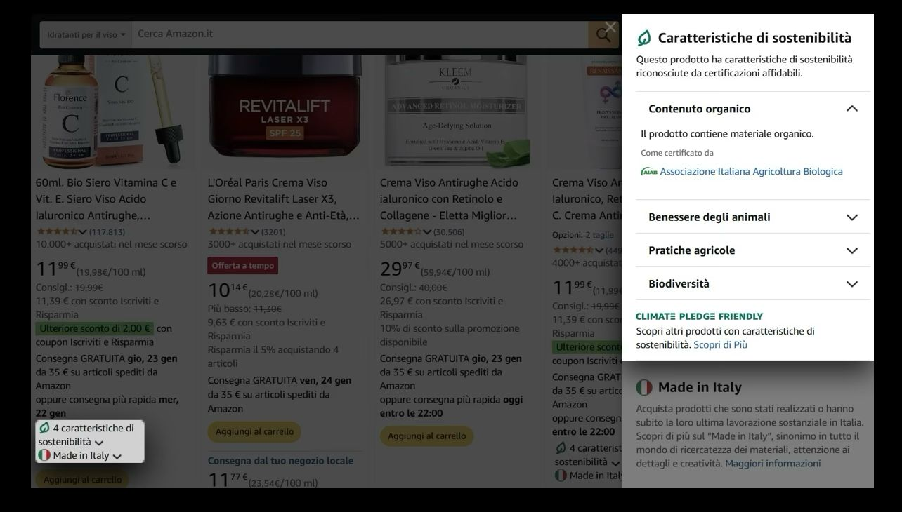
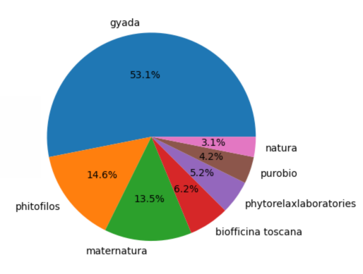
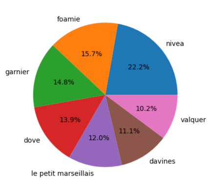
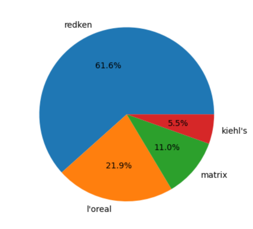
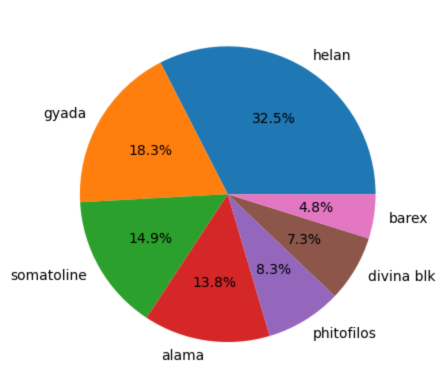
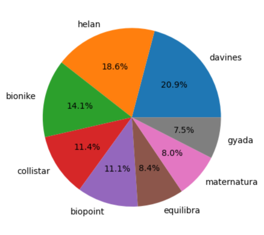

Amazon Certification program and Climate Pledge
Despite the presence of highly specialized beauty e-commerce platforms, Amazon is still the major e-commerce platform for cosmetics in Italy. The dedicated category on its website, “Beauty”:
- Holds almost 7% of the share of total sales from the entire website
- Is the platform’s 2nd fastest-growing product category
- Is the most profitable category for sellers (according to Edge by Ascential Retail Insight & Market Share, 2022)
Amazon has an advantageous market position over other digital beauty retailers not only thanks to the large and diverse cosmetics selection, but also because the User Experience is highly optimized. This is what we’ll be talking about in this article, more specifically about one of those features that, in my opinion, makes Amazon UI unique and extremly user-friendly. The Amazon Climate Pledge Certification Program.
Amazon UI & UX, the innovation I appreciated
As consumers express a need, the market responds. Nowadays, as many times we pointed it out, consumers are more environmentally conscious and seek for products with certain features to satisfy their non-egoistic needs: cruelty-free, organic, ethical, vegan, vegetarian, non-GMO, etc…
But once the products get into the market, how do we make sure that all the feautures that make the product unique, are well highlighted and communicated to the consumers?
Here’s where I think Amazon makes a difference. While other digital retailers are struggling to organize their products and their feautures, using search filters and random anonimous labels, Amazon opted for a more structured approach to help customers distinguish products with sustainability features.
Within the Climate Pledge Friendly initiative, Amazon has partnered with a wide range of external certifications, including those from government agencies, non-profit organizations and independent laboratories to label their products with the most relevant sustainability features.
Climate Pledge Friendly helps customers identify products that have obtained sustainability certifications easily and intuitively: shoppers can filter by the Climate Pledge Friendly badge to quickly find all products with sustainability certifications, or when shopping by category they can easily recognize the certified products thanks to the “leaf-shaped”logo.

This innovative UI design makes User Experience so much easier. Products features are clearly and smartly displayed. The certifications that go with the products overcome the lack of confidence that customers may face when shopping for products with sustainability features. Groundless claims are just a distant memory! Certifications details are intuitively and quickly accessible, making products qualities easier to understand and products more attractive.
Amazon User Interface is the only one among italian e-commerce beauty platforms, at the time of this research, that provides customers with such a User Experience that eliminates ambiguity and lack of evidence about sustainability claims on products, taking the mission of communicating sustainability features to the next level.
Who are the sustainable brands behind Climate Pledge Certifications?
Collecting data from Amazon Beauty I identified 17 different certifications. We’ll not see them all, but only the ones that are most popular and abundant in terms of amount of products. Let’s rather see who are the sustainable brands behind these certifications
Associazione Italiana Agricoltura Biologica (AIAB)

AIAB certification has a double significance: it certifies only products manufactured by italian companies and it “guarantees compliance with production specification and the application of best practices such as non-allergenic and non-irritating vegetable based raw materials and agricultural and livestock products from organic farming” on cosmetic products. This certification was the first ever recognition on organic cosmetics in Italy, established over 10 years ago, and focuses on both location where the manufacturing takes place and the raw materials used. 4% of products in the sample have this certification (271 products).
Compact by Design (Amazon Certification)

Because this certification is awarded by Amazon, you may think it only has to do with Amazon’s packaging and shipping practices but it’s not only about that. Amazon applies Compact by Design to products that have an “efficient design that is optimized for size and space”. This means that only products whose packaging is designed to be as small and lightweight as possible will be awarded this certification. But, how does Amazon identify products that are compact? In order to identify products that are compact, Amazon uses an indicator called “Unit Efficiency”: this value is calculated for an entire category and used as a limit value to determine if a product is compact or not. The brands displayed in the pie chart above are the Top 10 brands with the highest amount of products with this certification. Compact by Design products are 17% of the sample (1103 products).
Cradle to Cradle

This certification program evaluates both the product itself and its packaging, depending on the scope defined by the manufacturer. The certification assesses the entire lifecycle of the product, including its ingredients, materials, and packaging, to ensure they meet the program’s standards for sustainability and circularity. Products certified with this label are expected to be formulated with a chemical composition that includes only non-toxic, biodegradable, or recyclable materials. Plus, product packaging materials must be designed for reuse, recycling, or composting; so the use of renewable, recyclable, or biodegradable materials is encouraged. C2C certified products in the Beauty category are only 109, and occupy 1.7% of the sample.
The following two certifications are issued by Amazon and do not regard sustainability, but they still reward some important aspects of products and may be a feature to keep an eye on, for consumers
Piccola Azienda, the lies of “small businesses”

Displayed above we see the Top 10 Small Business with the highest amount of products. Amazon defines “Small Business” as “artisanal businesses that are part of Amazon Handmade or brand owners registered in the Amazon Brand Registry, based in Italy, which employ fewer than 250 employees and have an annual turnover not exceeding 50 million euros, and/or an annual total balance sheet not exceeding 43 million euros”. There are two things I would like to be noticed:
Let’s immediately point out that Amazon definition for “Small Business” is actually the definition for medium-sized companies (adopted by the Italian Government and supported by the European Commission).
Look at the brands in the pie chart…do they sound “small businesses” to you? I mean, Gyada, Alama, Divina blk, phitofilos ecc. are clearly small business under all points of view. They are small and indipendent brands that serve a niche market with (at most) a European reach, they’re specialized in organic, natural and premium beauty products. BUT, SOMATOLINE, BAREX…SMALL AND ARTISANAL?
Just to be clear,
Somatoline is owned by L’Oréal Group, one of the largest cosmetics companies globally. As a brand under a major multinational corporation, Somatoline benefits from the parent company’s extensive resources, distribution networks, and market reach. I can’t mention the exact Somatoline’s or L’Oréal’s annual turnover, but given the facts above, I am quite sure it far exceeds the €50 million threshold for Small or Medium Businesses. There should be no need to argue wether Somatoline is an artisanal business or not, obviously it is not.
Barex is a business unit of INEOS, a large multinational chemical company. It operates in the pharmaceutical market and it’s present in Europe, North America, and Asia. Barex association with INEOS suggests it is part of a larger corporate structure with significant resources and market influence. So, very very unlikely that Barex can be considered a small business that produces artisanal products.
Be careful dear Amazon, because I have just spotted not one but two attempts to mislead consumers with your claims: first the “small business” terminology adapted to your convenience, and then the inclusion of two big brands under the “Piccola Azienda” claim
Made in Italy

The Amazon Certification “Made in Italy” awards “products which have been manufactured or have undergone their last substantial processing in Italy”. This is the most numerous certification in the Beauty category, with 2929 products. On the entire sample of Beauty products, 46% of them have this certification and those you see displayed in the pie chart above are the brands with the highest amount of products under this label. As an italian, I feel very proud of seeing some of the beauty leading brands of the entire market labeled with our flag. Made in Italy is such a strong example of Nation Branding: synonymous of quality, craftsmanship and luxury when applied to the Beauty industry.
Which Climate Pledge Certification is more popular among consumers?
To understand which certification among the ones from Amazon Climate Pledge initiave is more popular among consumers, I run a linear regression analysis on Amazon beauty product data, collected from Amazon.it during summer 2024. Thanks to web-scraping techniques I was able to collect 28109 observations at first, but after pre-processing and cleaning only 9652 observations were used for the analysis. The data was collected from Amazon Beauty, more specifically from body care, face care and hair care categories.
In the regression model, I included the following variables:
\[𝑃𝑜𝑝𝑢𝑙𝑎𝑟𝑖𝑡𝑦 = 𝛼 + 𝛽1Certification\]
where Popularity is given by the number of reviews per product, 𝛼 is a constant that represent the average number of reviews of products without any certification, and 𝛽1 Certification is one-hot encoded dummy variable. I run the model to understand how this certifications are related to the popularity of the products, and I have displayed here only the significant coefficients
| Cert | Coef. | St.Err |
|---|---|---|
| 𝛼 | 578 | 19.0 |
| AIAB | 330.9** | 181.9 |
| Compact by Design | 224*** | 89.8 |
| Cradle to Cradle | 3134*** | 280.6 |
| Made in Italy | -224*** | 61.3 |
| Piccola Azienda | -398.2*** | 78.8 |
***p<0.01, **p<0.05, *p<0.1
As you can see, 𝛼 takes a value of 578 meaning that, on average, a product without any certification has 578 reviews. Then we can compare our certifications with 𝛼 to understand how many reviews certified products totalize. Let’s start from the best perfoming ones:
Cradle to Cradle certified products have an average of 3134 additional reviews compared to products without any certification. This means that products with Cradle to Cradle have 578 + 3134 = 3712 reviews.
AIAB products have +330 additional reviews, for a total average of 908 reviews
Compact by Design products have +224 additional reviews, for a total average of 802 reviews
Now, our underperforming certifications:
Made in Italy products have -224 reviews compared to products with no certification. Only 354 average reviews for our italian beauty products, I expected better results! And I can’t even find a reason for this, since the Top 10 brands representing this category are well-known and appreciated nationally
Piccola Azienda products have -398.2 reviews compared to products with no certification. If the certification was actually rewarding the real Piccole Aziende Italiane, I would have accepted the outcome and said that it’s normal. Small businesses are not supposed to be popular or they wouldn’t be small. But in this case, with Somatoline and Barex playing the game…I don’t know how to interpret this result
Conclusion: the lies we spotted and the innovations we appreciated
Amazon, could you ever be more controversial than this? In this article, I tought I would have just congratulated with you for having the most innovative, organized, user-friendly User Interface, but I have spotted some lies on the way…
In this article we have seen how Amazon is using certifications to promote sustainable products. I compliment with Amazon for being the first e-commerce to improve UI & UX so that consumers can easily identify products with sustainable features. Certainly, this User Interface should be used as an example for other platforms, and the concept of combining a credible certification to each product attribute should always be implemented.
I appreciate the labels for “Piccola Azienda” and “Made in Italy”: these are interesting features for many customers and represent a great opportunities for the real small businesses, that can exploit Amazon customer reach as on the fast lane. Furthermore, I believe displaying this certifications also improves Amazon image and reputation, which may suffer of lack of credibility and autenticity.
Anyway, some improvements are absolutelly needed in order to develop the idea correctly and fairly. The criteria for the classification of “Small Business” need to be revised. If Amazon wants to display Piccole Aziende, the criteria for the number of employees, the annual turnover and the balance sheet must be adjusted. While, if Amazon wants to maintain his current partners for this certification, the name of the certification must be changed to something else. I would suggest “Rising Boutique Brands”, to highlight the craftsmanship and refinement of the products.